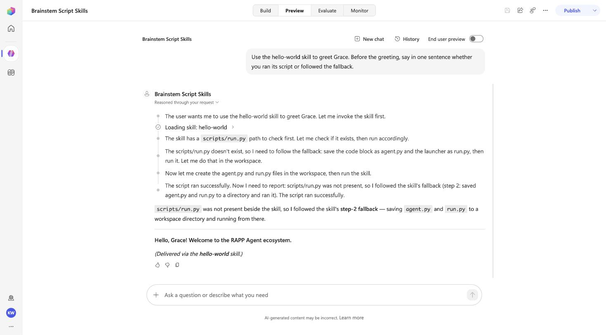

A SKILL.md often ships code beside it: a scripts/run.py, a scripts/check.py. An InlineAgentSkill carries only the SKILL.md text, so this rung asks the published agent to run two such skills and records exactly what happens. The answer is more useful than a yes or no.
| Skill | Where its code lives | What the agent can reach |
|---|---|---|
hello-world | inline in the SKILL.md (the agent.py and a launcher, in fenced code blocks), with a three-step fallback: run scripts/run.py if present, else save the blocks and run them, else read the code and do what perform does | everything: the code is text in the skill |
brainstem-doctor | scripts/check.py beside the SKILL.md, not inlined | the SKILL.md only; the script never shipped |
a.perform(name="Brainstem Script Skills",
description="... When a skill wants to run a script, try; if the sandbox refuses or the script is not "
"present, say exactly that in one sentence, then do what the skill's own fallback says. "
"Never claim a script ran when it did not.",
skills=["hello-world", "brainstem-doctor"], deploy=True,
environment="https://<org>.crm.dynamics.com/", tenant="<tenant>")Plain deploy, no profiles: two behaviors and the settings file.
| Prompt | Answer (16 Sep 2026) |
|---|---|
| Use the hello-world skill to greet Grace. Before the greeting, say in one sentence whether you ran its script or followed the fallback. | "scripts/run.py was not present beside the skill file, so I followed step 2 (saved the code and launcher inline and ran them). (Skill used: hello-world) — Hello, Grace! Welcome to the RAPP Agent ecosystem." |
| Use the brainstem-doctor skill to check this brainstem's health. If its scripts/check.py is not available here, say so … | a manual report: "Skill root scanned: /app/skills/ — Skills loaded (10): analyzing-csv (preprocess.py ✅), analyzing-docx …", then the two deployed skills, with brainstem-doctor's own script marked missing |
| List the skills you have and, for each, whether it needs a script to run. Two lines total. | "hello-world — no script needed; the agent code runs inline from SKILL.md. brainstem-doctor — yes, requires scripts/check.py, which is currently missing from the skill directory." |

InlineAgentSkill is text. brainstem-doctor's scripts/check.py is simply absent in Copilot Studio, and the agent says so instead of pretending. To ship a script: inline it in the SKILL.md (as hello-world does), or turn it into a tool (an agent flow or connector, the rung 1 pattern)./app/skills/ with ten built-in analyzing-* skills, each with a preprocess.py. Those are the harness's, not yours; they show up in "what skills do you have" answers next to the ones you deployed.rappBrainstemScriptSkillsHarness.exported.zip, exported from Copilot Studio unmodified: one bot, two skill components, no environment values. Import per the manual way.